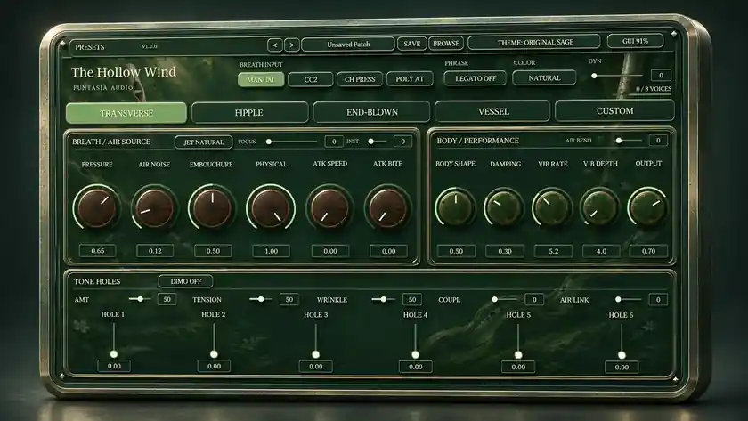
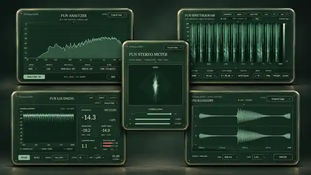
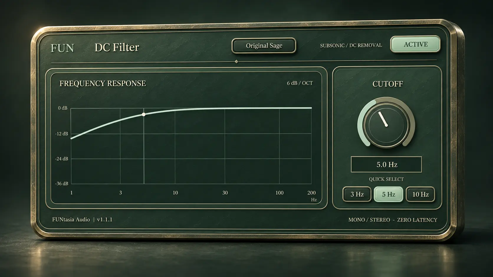
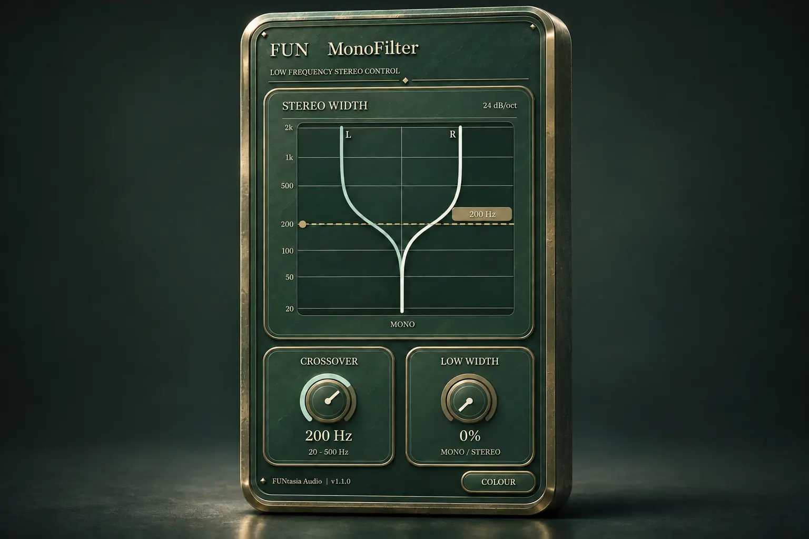
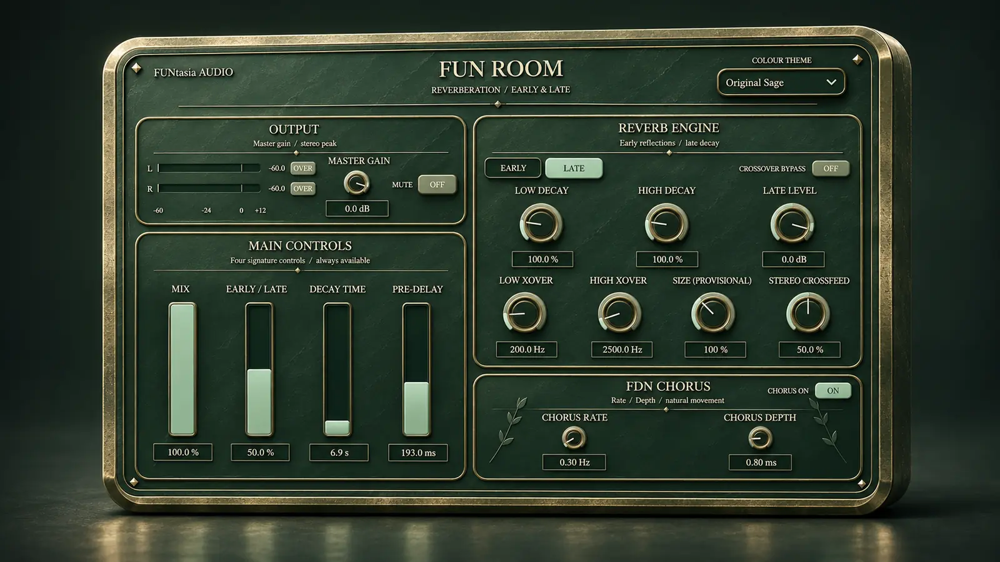
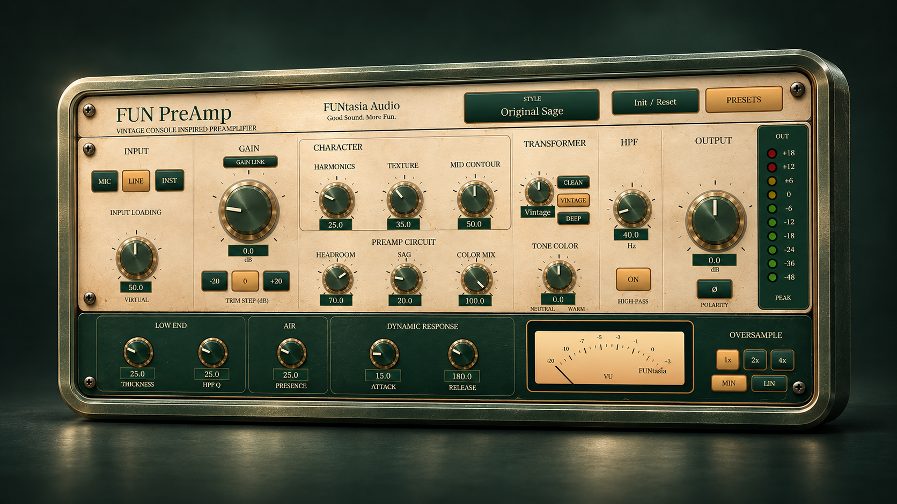
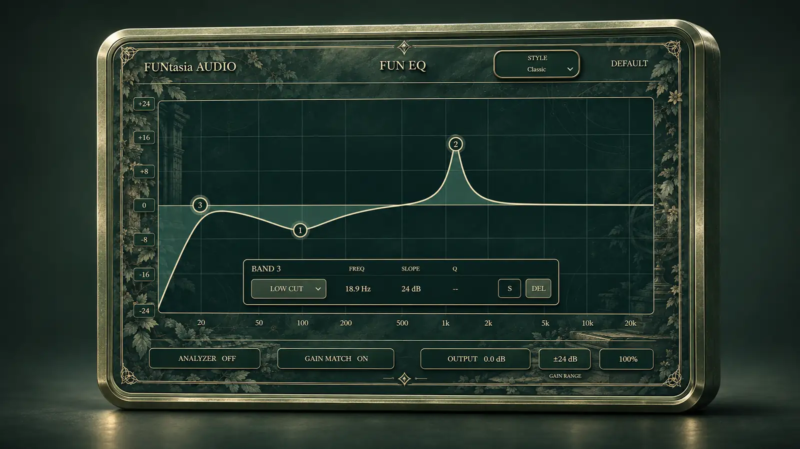
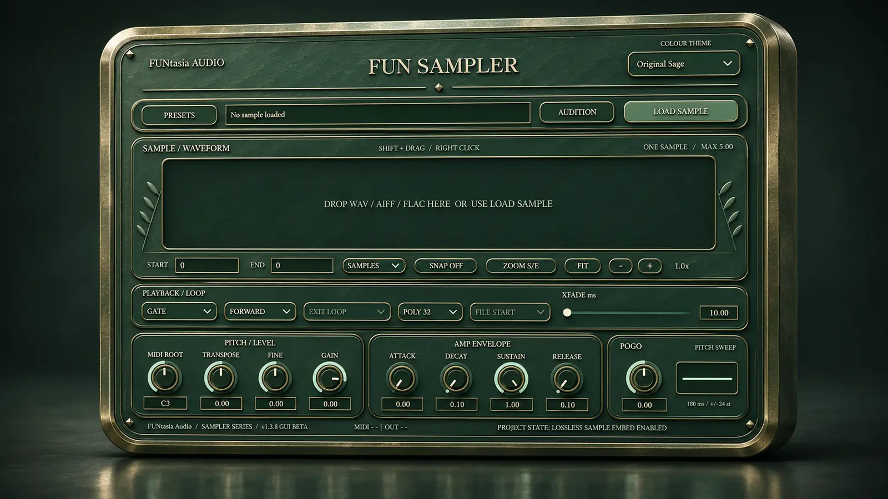
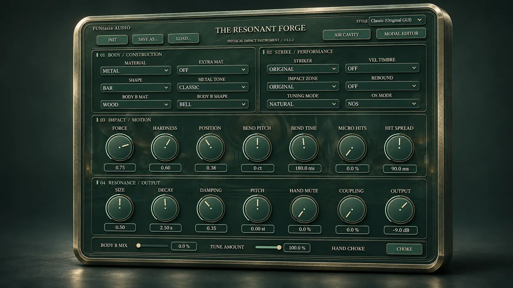

FUNtasia Free Collection v1.0.8
v1.0.8で2製品追加：FUN Tape Stop・FUN Auto Pan
※ 製品カードの画像はコンセプトビジュアルです。実際のプラグイン画面とは異なる場合があります。
品質管理：すべてのアップデートでpluginval Strictness Level 10、Steinberg VST3 Validator、Undo／Redoを含む詳細な機能・回帰テストを実施しています。
v1.0.8で2製品追加：FUN Tape Stop・FUN Auto Pan
ワンノブでビルドアップ、ライザー、トランジションを演出。






















該当する製品はありません
いいえ。私たちはAIを開発に活用していますが、AI任せでプラグインを自動的に作らせているわけではありません。設計、実装内容の確認、テスト、修正などを重ねながら開発しています。開発への考え方はNoteの記事で詳しく紹介しています。ぜひお読みください。
学習向けDAW「FUNtasia Studio」のストックプラグインとして開発しているものも、せっかくなので単体で使える形で配布しているためです。
はい。無料・有料を問わず、品質管理を重視しています。pluginval Strictness Level 10、Steinberg VST3 Validator、回帰テストなどについては、品質管理の詳細ページをご覧ください。
公式Discord「FUNtasia Alchemist Guild」で受け付けています。不具合の場合は製品名・バージョン・DAW・再現手順などを添えていただけると助かります。コミュニティに参加する ↗
私たちはMac対応を望んでいますが、サポートできる範囲などを慎重に考え、実行に移していきたいと思っています。